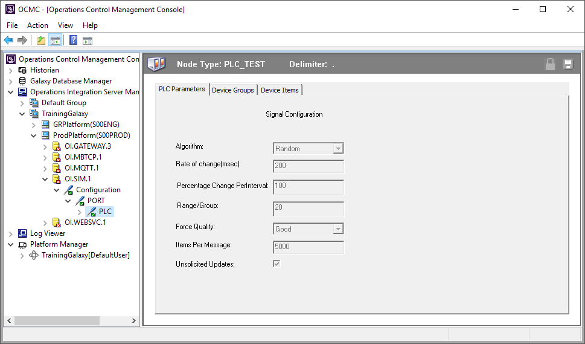
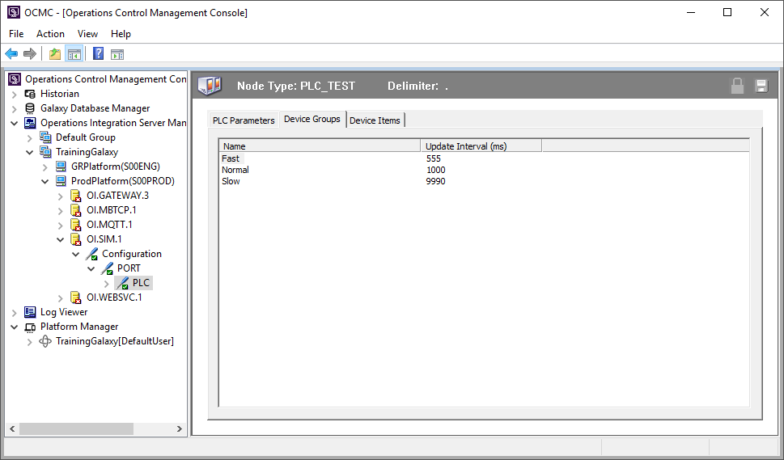
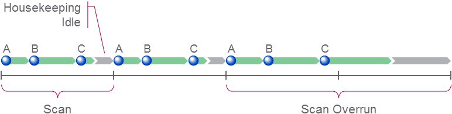
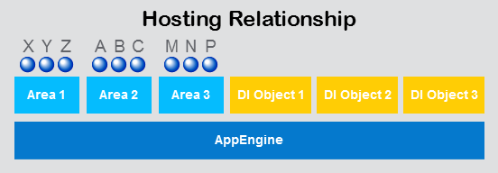
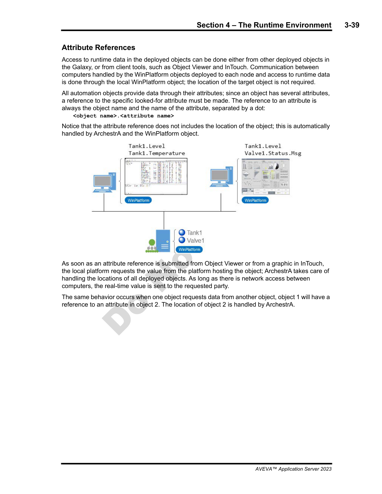

Source: AVEVA Application Server 2023 Training Manual, Module 3, Sections 3-4 (pages 3-29 to 3-42)
The OCMC is the runtime management hub — Galaxy Database Manager, Logger, and Platform Manager. The runtime environment defines how deployed objects communicate via attribute references and scan cycles.
Reference: Module 3, Section 3 (page 3-29)
The Operations Control Management Console (OCMC) is the primary runtime management tool for Application Server. It is a separate application from the IDE — you use it after the Galaxy has been developed and deployed, when you need to manage and monitor live systems.

The OCMC has a tree-based navigation structure on the left. When you connect to a Galaxy, you see the following tools in the tree:
| Node in the Tree | What It Manages |
|---|---|
| Historian | Integration with AVEVA Historian — connection status and configuration |
| Galaxy Database Manager | Backup, restore, and create Galaxy databases |
| Operations Integration Server Manager | Manage OI Server nodes and their I/O device configurations — the tree expands as TrainingGalaxy > ProdPlatform > OI > OI.SIM.1 > PLC |
| Log Viewer | Browse and filter Application Server runtime events and log entries |
| Platform Manager | Monitor platform status, start/stop engines, and manage deployments at runtime |
When you select a node in the tree, the right pane shows the details for that node. In the screenshot above, PLC_TEST is selected under the OI.SIM.1 driver — the right pane displays its configuration: Algorithm set to Random, Rate of 200 ms, Range of 20, Force Quality set to Good, and Unsolicited Updates checked. This is a simulated I/O device used for training.
Reference: Module 3, Section 3 (page 3-30)
The Galaxy Database Manager is the OCMC tool for backing up, restoring, and creating Galaxy databases. It is the first node under the OCMC tree and the most operationally critical.

The Galaxy Database Manager offers two types of backup:
| Backup Type | What It Captures | When to Use |
|---|---|---|
| Full Backup | The entire Galaxy database — all objects, attributes, scripts, deployment configuration, and history | Before major changes, software upgrades, scheduled maintenance windows |
| Incremental Backup | Only the changes since the last backup | Frequent backups between full backups — faster but requires a base full backup to restore from |
Restore replaces the current Galaxy database entirely with the contents of a backup file. The Galaxy Database Manager presents a Restore option that lets you browse to the backup file and apply it.
The Galaxy Database Manager also provides a Create Galaxy from Backup option. This creates an entirely new Galaxy from a backup file — it does not overwrite an existing Galaxy but instead creates a new one. This is useful for:
| Action | Key Consideration |
|---|---|
| Full Backup | Complete snapshot — slower but self-contained for restore |
| Incremental Backup | Faster — but requires the base full backup plus all subsequent incrementals to restore fully |
| Restore | Overwrites the current Galaxy — backup the current state first |
| Create Galaxy from Backup | Creates a new, separate Galaxy — does not replace the existing one |
Reference: Module 3, Section 3 (pages 3-33 to 3-35)
The Log Viewer reads events from the Galaxy database and displays them in the OCMC. Application Server generates log entries for platform lifecycle events, object deployments, script execution results, alarm activity, and system errors. The Log Viewer lets you filter and search these events to troubleshoot issues or audit activity.
The Log Viewer provides filters by time range, event type, severity (Information, Warning, Error), and source object or platform. This makes it possible to narrow down thousands of entries to the ones relevant to your investigation.
Reference: Module 3, Section 3 (pages 3-35 to 3-36)
The Platform Manager lets you monitor and control platforms at runtime. A platform is a host machine running the Application Server runtime engine — it is the machine that executes deployed objects.
| Capability | Description |
|---|---|
| View status | See which platforms are online, offline, or in error |
| Start / Stop | Start or stop the runtime engine on a specific platform |
| Engine status | View the status of individual engines (AppEngine, Alarm Engine) on each platform |
| Redeploy | Trigger a redeployment of objects to a platform |
Reference: Module 3, Section 4 (page 3-37)
Once objects are deployed to a platform, they execute within the runtime scan cycle. The platform allocates a fixed time window for each scan cycle. Within that window, the runtime engine processes all active tasks — data acquisition, script execution, alarm evaluation — and then performs housekeeping before the next cycle begins.

A scan overrun can be caused by too many objects on a single platform, scripts that take too long to execute, or excessive I/O communication. If overruns are persistent, consider distributing objects across multiple platforms or optimizing scripts.
Reference: Module 3, Section 4 (pages 3-38 to 3-40)
Deployed objects communicate with each other through attribute references. When one object needs data from another, it references the source object's attribute. Application Server supports three types of references.

A direct reference is a hardcoded path written as:
\GalaxyName\ObjectPath.AttributeName
For example: \TrainingGalaxy\Area1\Tank1.PV — this directly references the PV attribute of Tank1.
An indirect reference stores the target path in a string attribute. At runtime, the system reads the string and resolves the reference dynamically.
For example, a string attribute might contain \TrainingGalaxy\Area1\Tank1.PV, and the actual attribute references that string instead of the path directly.
An expression-based reference uses an expression that evaluates to a path at runtime. This combines string manipulation with path construction — for example, building a reference from a base path plus a variable component like an instance number.
| Reference Type | Path Is Defined… | Best For | Drawback |
|---|---|---|---|
| Direct | Hardcoded in the attribute | Stable, fixed relationships | Breaks if object moves or is renamed |
| Indirect | Stored in a string attribute | Templates where instances differ | More setup; runtime resolution overhead |
| Expression-Based | Evaluated at runtime | Fully dynamic scenarios | Complex; hard to debug |
Reference: Module 3, Section 4 (pages 3-41 to 3-42)
I/O referencing is how object attributes connect to real-world data from field devices (PLCs, RTUs, DCS) through communication drivers. There are two methods: autobinding and manual binding.

Autobinding automatically maps object attributes to I/O tags based on naming conventions. When an object's attribute name matches an I/O tag name available through a configured driver, Application Server creates the binding without manual intervention.
Manual binding explicitly assigns an I/O tag to a specific object attribute by name, regardless of naming conventions. You specify the exact I/O tag path in the object's I/O configuration.
| Method | Requires | Best For | Trade-off |
|---|---|---|---|
| Autobinding | Consistent naming conventions across the project | Large deployments with disciplined tag naming | Fast setup — but breaks if naming is inconsistent |
| Manual Binding | Explicit I/O tag assignment per attribute | Small projects, exceptions, non-standard tag names | Full control — but more manual effort per attribute |
1. What are the five main nodes visible in the OCMC left pane when connected to a Galaxy?
Historian, Galaxy Database Manager, Operations Integration Server Manager, Log Viewer, and Platform Manager.
2. What are the two types of backup available in the Galaxy Database Manager, and how do they differ?
Full Backup captures the entire Galaxy database. Incremental Backup captures only changes since the last backup. Incremental is faster but requires a full backup as a base for restore.
3. What happens during a scan overrun, and what can cause it?
During a scan overrun, the runtime tasks (data acquisition, scripts, alarm evaluation) extend past the allocated time window, cutting into the housekeeping/idle period. This causes delayed updates and degraded performance. Common causes include too many objects on one platform, slow scripts, or excessive I/O communication.
4. Name the three types of attribute references and describe the key difference between them.
Direct references hardcode the full path (e.g., \Galaxy\Path.Attr) — simple but break if the object moves. Indirect references store the path in a string attribute — flexible and changeable at runtime. Expression-based references evaluate an expression at runtime to build the path — the most dynamic but hardest to debug.
5. What is the difference between autobinding and manual binding for I/O referencing?
Autobinding automatically maps attributes to I/O tags when names match — fast for large deployments but requires consistent naming. Manual binding explicitly assigns each I/O tag to a specific attribute — more control and works with any naming scheme, but requires more effort.